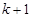
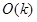
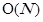
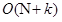

Sorting Algorithms
Counting Sort
Στην επιστήμη των υπολογιστών, η ταξινόμηση μέτρησης είναι ένας αλγόριθμος ταξινόμησης μιας συλλογής αντικειμένων σύμφωνα με τα κλειδιά τους που είναι ακέραιοι αριθμοί. Ο αλγόριθμος ενεργεί μετρώντας των αριθμό των αντικειμένων που έχει κάθε διακριτή τιμή κλειδιού, και κάνοντας χρήση αριθμητικής πάνω σε αυτές τις μετρήσεις προσδιορίζει τη θέση της κάθε τιμής κλειδιού στην ακολουθία εξόδου. Ο χρόνος εκτέλεσης είναι γραμμικός σε σχέση με τον αριθμό των στοιχείων και τη διαφορά μεταξύ της μεγαλύτερης και της μικρότερης τιμής κλειδιού, γι’ αυτό είναι κατάλληλος μόνο σε περιπτώσεις όπου η διαφοροποίηση των κλειδιών δεν είναι πολύ μεγαλύτερη από τον αριθμό των στοιχείων. Ωστόσο, συχνά χρησιμοποιείται ως υπορουτίνα σε έναν άλλον αλγόριθμο ταξινόμησης, την ταξινόμηση βάσης (radix sort), ο οποίος χειρίζεται μεγαλύτερα κλειδιά πιο αποτελεσματικά.
Επειδή η ταξινόμηση μέτρησης χρησιμοποιεί τιμές κλειδιών ως δείκτες πινάκων, δεν ανήκει στην κατηγορία των αλγορίθμων σύγκρισης και το κάτω όριο  δεν εφαρμόζεται εδώ. Η ταξινόμηση δοχείου (bucket sort) μπορεί να χρησιμοποιηθεί για πολλές από τις ίδιες εργασίες που εφαρμόζεται η ταξινόμηση μέτρησης με παρόμοια χρονική ανάλυση. Όμως σε σύγκριση με την ταξινόμηση μέτρησης, η ταξινόμηση δοχείου απαιτεί συνδεδεμένες λίστες, δυναμικούς πίνακες ή μεγάλο αριθμό προκαθορισμένης μνήμης για να αποθηκεύσει το σύνολο των αντικειμένων που βρίσκονται σε κάθε δοχείο. Αντιθέτως η ταξινόμηση μέτρησης αποθηκεύει έναν μοναδικό αριθμό (το σύνολο των αντικειμένων) ανά δοχείο.
δεν εφαρμόζεται εδώ. Η ταξινόμηση δοχείου (bucket sort) μπορεί να χρησιμοποιηθεί για πολλές από τις ίδιες εργασίες που εφαρμόζεται η ταξινόμηση μέτρησης με παρόμοια χρονική ανάλυση. Όμως σε σύγκριση με την ταξινόμηση μέτρησης, η ταξινόμηση δοχείου απαιτεί συνδεδεμένες λίστες, δυναμικούς πίνακες ή μεγάλο αριθμό προκαθορισμένης μνήμης για να αποθηκεύσει το σύνολο των αντικειμένων που βρίσκονται σε κάθε δοχείο. Αντιθέτως η ταξινόμηση μέτρησης αποθηκεύει έναν μοναδικό αριθμό (το σύνολο των αντικειμένων) ανά δοχείο.
Συνοπτικά, ο αλγόριθμος σαρώνει όλα τα αντικείμενα υπολογίζοντας ένα ιστόγραμμα με τον αριθμό των φορών που εμφανίζεται κάθε κλειδί στη λίστα εισόδου. Στη συνέχεια εκτελεί έναν αθροιστικό (prefix sum) υπολογισμό (δεύτερη σάρωση, στο εύρος των πιθανών κλειδιών) για να αποφασίσει, για κάθε κλειδί, την αρχική θέση στον πίνακα εξόδου των αντικειμένων που έχουν αυτό το κλειδί. Τέλος, σαρώνει και πάλι τα αντικείμενα, μετακινώντας καθένα στην ταξινομημένη θέση στον πίνακα εξόδου.
Επειδή ο αλγόριθμος χρησιμοποιεί μόνο απλές επαναληπτικές μεθόδους, χωρίς αναδρομή ή κλήση υπορουτίνων, είναι αρκετά εύκολο να αναλυθεί. Η αρχικοποίηση του πίνακα Counts και η δεύτερη σάρωση που εκτελεί την άθροιση, καθεμία εκτελεί το πολύ  επαναλήψεις, επομένως απαιτείται  χρόνος. Οι άλλοι δύο βρόχοι επανάληψης και η αρχικοποίηση του πίνακα εξόδου, καθένα χρειάζεται  χρόνο. Συνεπώς χρόνος εκτέλεσης του αλγορίθμου είναι το άθροισμα των παραπάνω βημάτων  . Επειδή χρησιμοποιεί πίνακες μήκους και N, ο συνολικός χώρος χρήσης του αλγορίθμου είναι επίσης . Για περιπτώσεις που η τιμή του μεγαλύτερου κλειδιού είναι αισθητά μικρότερη από τον αριθμό των αντικειμένων, η ταξινόμηση μέτρησης προκύπτει αρκετά αποδοτική από θέμα χώρου, διότι ο μοναδικός αποθηκευτικός χώρος που χρησιμοποιεί εκτός από τους πίνακες εισόδου και εξόδου είναι ο πίνακας Counts με χώρο .
Pseudocode
2.
3.
4.
5.
6.
7.
8.
9.
10.
11.
12.
13.
14.
15.
16.
17.end
Applet
Example
Έστω ο πίνακας A=[10 9 8 7 6 5 4 3 2 1] και max=10 η μέγιστη τιμή. Δημιουργούμε ένα πίνακα 11 θέσεων με το όνομα counts και αρχικές τιμές 0 παντού.
Επανάληψη 1Το 1ο στοιχείο του πίνακα Α είναι το 10, οπότε αυξάνουμε κατά μία μονάδα το στοιχείο στη θέση 10 του πίνακα counts.
counts=[0 0 0 0 0 0 0 0 0 0 1]Επανάληψη 2
Το επόμενο στοιχείο του Α είναι το 9 άρα προσθέτουμε μία μονάδα στην τιμή του στοιχείου 9 στον πίνακα counts.
counts=[0 0 0 0 0 0 0 0 0 1 1]…
Επανάληψη 10
Το τελευταίο στοιχείο του Α είναι το 1 και έτσι το στοιχείο στη θέση 1 του πίνακα counts αυξάνεται κατά 1.
counts=[0 1 1 1 1 1 1 1 1 1 1]Στην επόμενη δομή επανάληψης προστίθενται σε κάθε θέση όλες οι προηγούμενες τιμές του πίνακα counts με το παρακάτω αποτέλεσμα.
counts=[0 1 2 3 4 5 6 7 8 9 10]Στην τελευταία δομή επανάληψης ολοκληρώνεται η ταξινόμηση με το αποτέλεσμα να εμφανίζεται στον πίνακα result ο οποίος έχει το ίδιο πλήθος στοιχείων με τον Α.
Επανάληψη 1Ο δείκτης i γίνεται 0, το στοιχείο Α[0]=10 μας μεταφέρει στον δείκτη 10 του πίνακα counts, έτσι ώστε να αφαιρέσουμε μία μονάδα για να υπολογίσουμε τη θέση που θα τοποθετηθεί το πρώτο ταξινομημένο στοιχείο (counts[A[0]]=counts[10]=10-1=9). Έτσι στον πίνακα result στη θέση με δείκτη 9 θα τοποθετηθεί το Α[0]=10. Η προηγούμενη θέση υπολογίζεται με βάση τη θέση που έχει τοποθετηθεί το στοιχείο 10 στον πίνακα counts.
result[counts[A[0]]] = result[counts[9]] = result[9] = 10Επανάληψη 2
Ο δείκτης παίρνει την επόμενη τιμή (i = 1) και το επόμενο στοιχείο του Α (A[1] = 9) τοποθετείται στη σωστή θέση με τον παρακάτω υπολογισμό.
counts[A[1]]=counts[9]=9-1=8Και η τοποθέτηση του Α[1]=9 στην αντίστοιχη θέση του πίνακα result.
result[counts[A[1]]] = result[counts[9]] = result[8] = 9…
Επανάληψη 10
Ο δείκτης παίρνει την τελευταία τιμή (i = 9) και το μοναδικό στοιχείο που έμεινε να τοποθετηθεί είναι το A[9]=1.
counts[A[9]]=counts[1]=1-1=0result[counts[A[9]]] = result[counts[1]] = result[0] = 1
Το αποτέλεσμα είναι το ακόλουθο
result=[1 2 3 4 5 6 7 8 9 10]